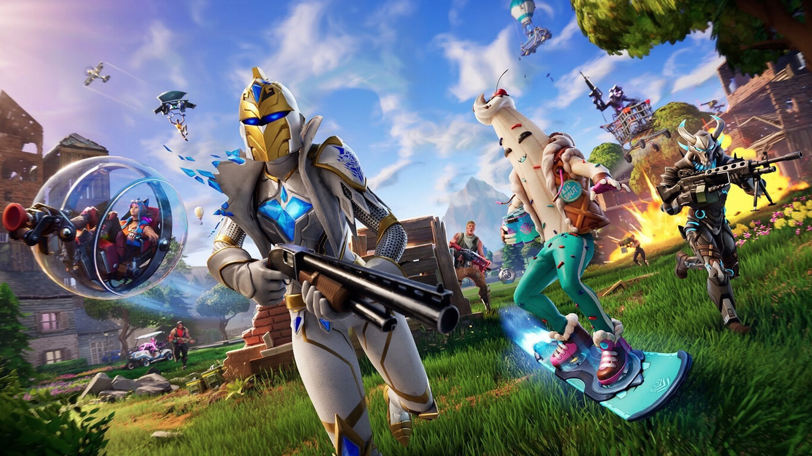

Steve
Trevor Philips
Arthur Morgan
Sans

Nathan Drake

El juego sigue las aventuras de Cuphead y su hermano Mugman, quienes hacen un trato con el Diablo y luego deben luchar contra una serie de jefes para recuperar sus almas. La historia es sencilla, pero sirve como excusa perfecta para el frenesí de combates y niveles desafiantes.
Una de las cosas más destacadas de Cuphead es su dificultad. No es un juego fácil: requiere reflejos rápidos, memorización de patrones de ataque y mucha paciencia. Cada jefe tiene múltiples fases y mecánicas únicas que obligan al jugador a aprender y adaptarse constantemente.
En cuanto a lo visual, el juego es una obra de arte. Todo está dibujado a mano, con animaciones tradicionales y música jazz original que complementa perfectamente la estética retro. Es como jugar dentro de una caricatura antigua.
Cuphead puede jugarse en solitario o en modo cooperativo local con dos jugadores, lo que lo hace aún más divertido (y caótico). También recibió una expansión llamada “The Delicious Last Course” en 2022.

Hollow Knight es un juego de acción y aventuras en 2D, creado por Team Cherry.
Controlás a un pequeño guerrero en un mundo subterráneo llamado Hallownest.
El juego tiene exploración libre, combates desafiantes y estilo metroidvania.
Destaca por su arte dibujado a mano, música melancólica y atmósfera oscura.
Es difícil, pero muy querido por su profundidad y diseño de mundo.

FC 26 es un juego de fútbol de EA Sports, sucesor de FIFA.
Salió en septiembre de 2025 para PlayStation, Xbox, PC y Switch.
Trae dos estilos de juego: uno competitivo y otro más realista.
Mejoraron la IA, los arqueros y los movimientos de los jugadores.
Incluye más de 20.000 jugadores, 750 clubes y muchas ligas reales.